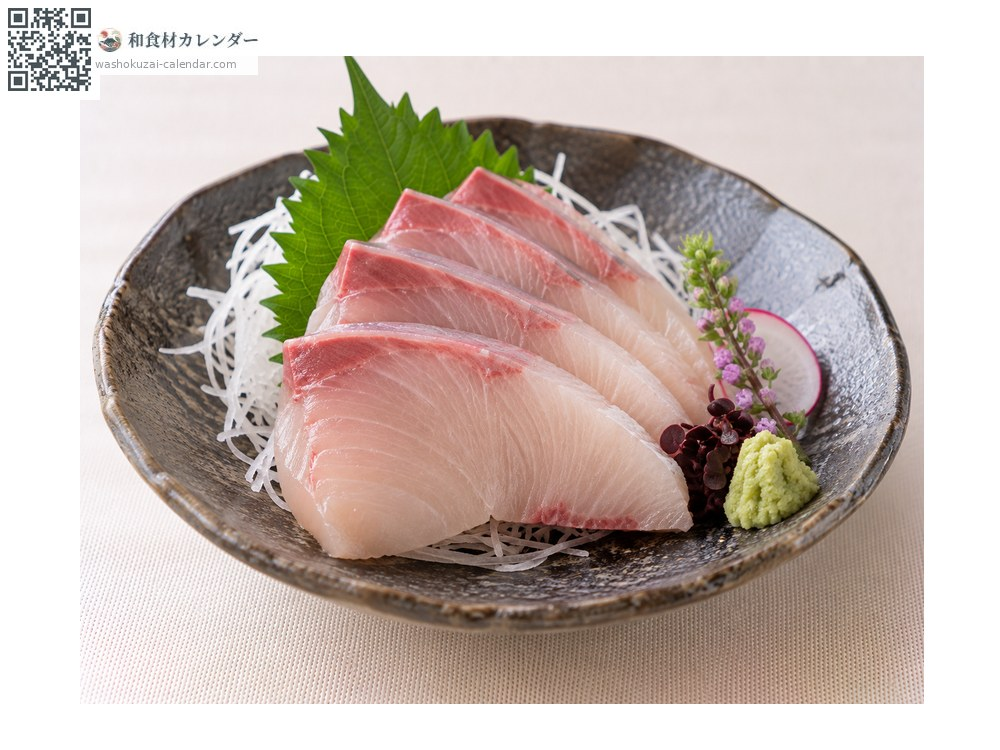
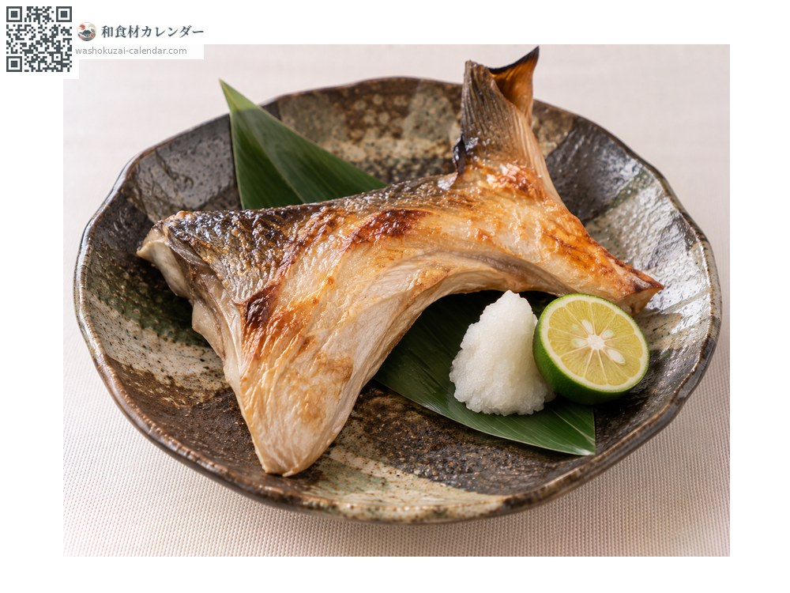
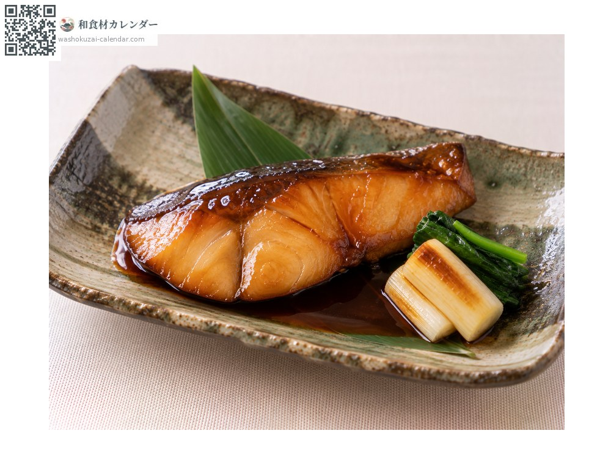
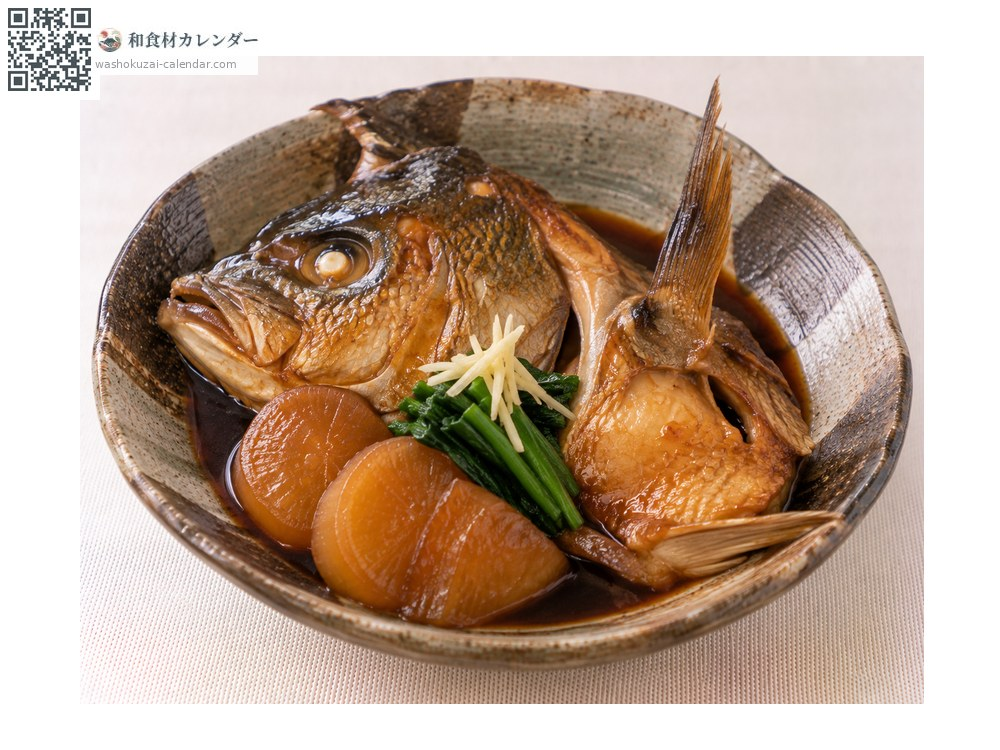

อาหารทะเล
ปลาคัมปาจิ (ปลาหางเหลืองครีบยาว)
カンパチ かんぱち kanpachi
ชื่ออื่นkanpachi
อร่อยที่สุดในเดือน มิ.ย., ก.ค., ส.ค., ก.ย.

ช่วงที่อร่อยที่สุด
ม.ค.
ก.พ.
มี.ค.
เม.ย.
พ.ค.
มิ.ย.
ก.ค.
ส.ค.
ก.ย.
ต.ค.
พ.ย.
ธ.ค.
ช่วงอร่อยที่สุดมีจำหน่าย
วิธีปรุง

ซาชิมิ
เนื้อแน่นกว่าบุริ มันน้อยกว่าแต่รสสะอาด หั่นบางจะได้สัมผัสที่ดี

ย่างคอปลา
โรยเกลือแล้วย่าง เนื้อติดกระดูกอร่อยที่สุด

เทริยากิ
เคลือบซอสหวานเค็ม ชิ้นหนาจึงอย่าให้สุกเกินไป

ตุ๋นหัวและกระดูก
หัวและคอปลาตุ๋นซีอิ๊วหวาน ให้น้ำซุปที่ดี
วิธีเลือก
ตาใส ลำตัวแน่นตึง ชิ้นแล่ควรมีเนื้อแดงตรงเส้นเลือดสีสด และเนื้อสีชมพูใส
วิธีเก็บรักษา
เนื้อแน่นจึงเก็บได้นานกว่าบุริ ชิ้นแล่ซับน้ำ ห่อฟิล์มแช่เย็น ใช้ภายใน 2 วัน
แหล่งผลิตหลัก
เกร็ดน่ารู้
มีแถบสีเข้มเฉียงเหนือตา มองจากด้านหน้าคล้ายอักษรคันจิเลขแปด จึงเป็นที่มาของชื่อ ราคามักสูงกว่าบุริ
วัตถุดิบที่อร่อยที่สุดในช่วงเดียวกัน
 ปลาอาจิ (ปลาทูแขกญี่ปุ่น)
ปลาอาจิ (ปลาทูแขกญี่ปุ่น) ปลาชิมะอาจิ (ปลาสำลีแถบเหลือง)
ปลาชิมะอาจิ (ปลาสำลีแถบเหลือง) ปลาอิวาชิ (ปลาซาร์ดีนญี่ปุ่น)
ปลาอิวาชิ (ปลาซาร์ดีนญี่ปุ่น) ปลาโคฮาดะ (ปลาตะลุมพุกญี่ปุ่น)
ปลาโคฮาดะ (ปลาตะลุมพุกญี่ปุ่น) ปลาซันมะ
ปลาซันมะ ปลาคัตสึโอะ (ปลาโอ)
ปลาคัตสึโอะ (ปลาโอ) ทูน่าครีบเหลือง
ทูน่าครีบเหลือง ปลาบิน
ปลาบิน